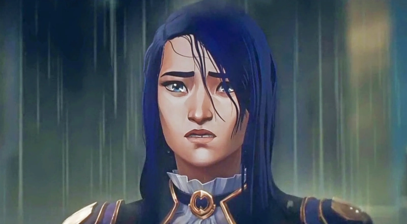
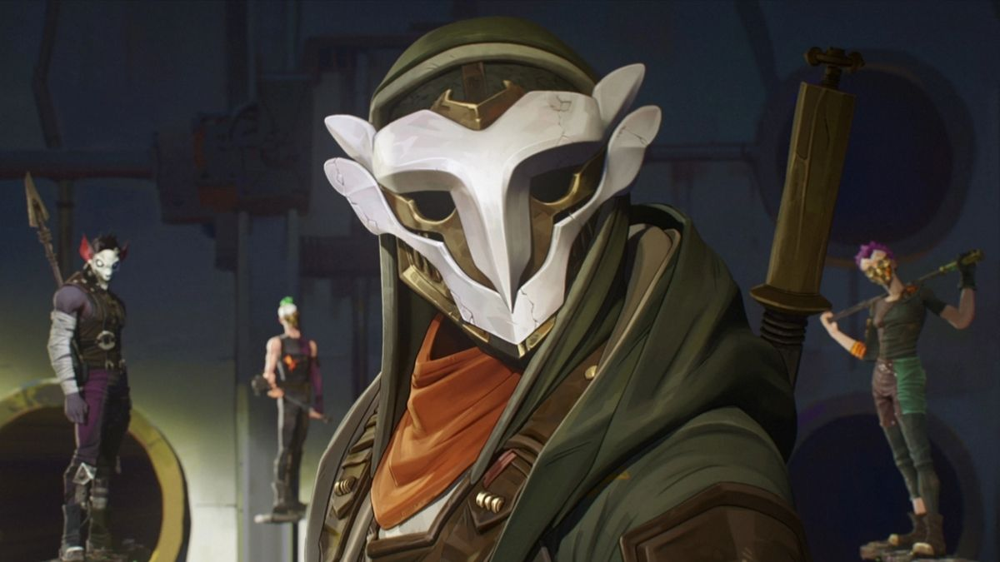
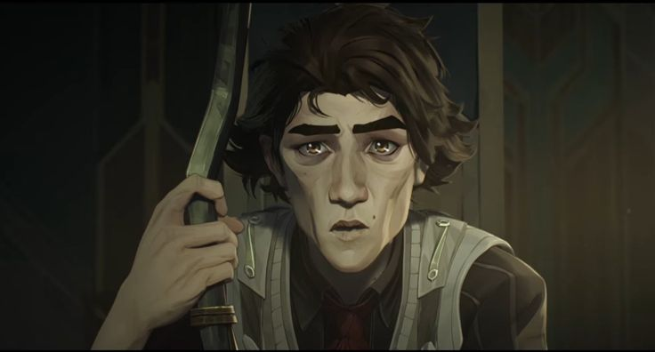
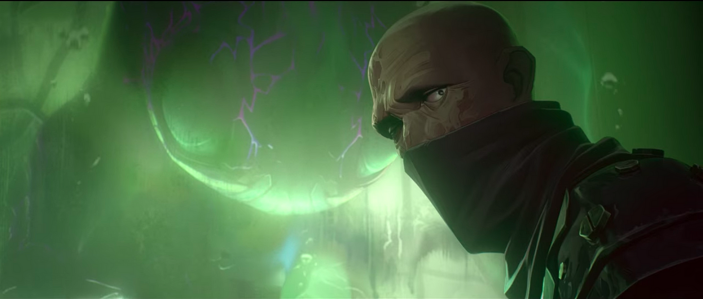

* Spoilers Below *
Characters made for the show:
* Spoilers Below *
Characters made for the show:
“You’re stronger than you think. And one day… This city’s gonna respect us.”
The rough and tumble badass, whos determined to find her sister.

"Here's to the new us"
Jinx starts off as a girl named ‘Powder’ trying to survive the streets of Zaun with her sister but ends up becoming one of the most dangerous people in the twin cities.

“This city needs healing. More than I ever realised.”
Caitlyn is determined to find out what is really going on with the undercity(Zaun). Caitlyn ends up recruiting Vi from prison and unknowingly becomes Jinx’s nemesis.
“It’s not enough to give people what they need to survive, you have to give them what they need to live.”
Ekko leads a group called ‘The Firelights’ Ekko tries his best to do whats right and help his people live. Even if it means sometimes nearly getting blown up by Jinx by doing so.
“When you’re going to change the world, don’t ask for permission.”
Viktor grew up in the toxic environment of the undercity and it made him chronically ill. His story shows him trying to use his science smarts to cure himself but it all ends wrong, leaving him devastated at what he has done.
“We are the City of Progress, and our future is bright!”
Jayce is a genius but is incredibly stupid, he changes things for the better when he invents ‘Hextech’ but his arrogance has him make very questionable decisions.

“Please understand this is for you own sanity, I too, once had a daughter..”
This guy is.. creepy, and his scientific methods are pretty unethical, and hes also sadistic.
“No great science should ever put lives in danger.”
Heimerdinger is really smart and really old, in fact, he’s one of the FOUNDERS!! Of the city! Somehow he dosen’t see the very real problems the city has and it takes a forced retirement to do something about it.